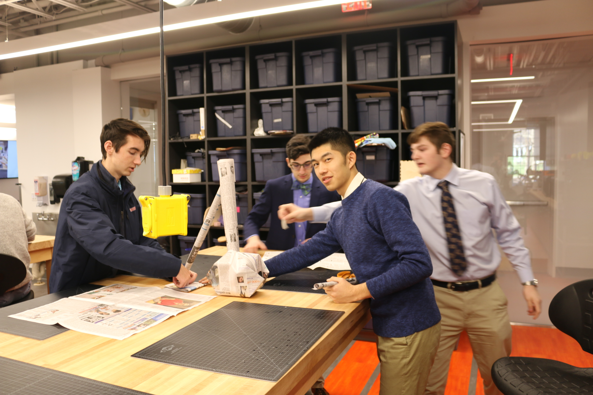

We are discussing the shape of the base, and I proposed to make a sphere as the base with a hole on top, so that the top part can stick into it perfectly. I thought about my previous experience of paper folding, so I built a paper ball and used it as the base.
The final object we made was quite tall, but not the tallest among all. We concluded that it may be caused by uncareful designing and scornfulness toward other teams. We considered to minimize the surface area, but wasted too much newspaper on the constructing part as the base.